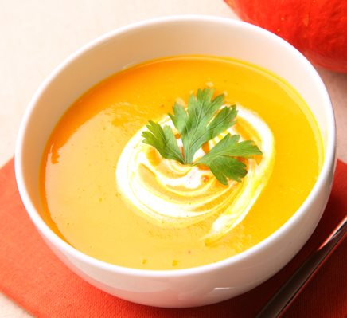

Sopa crema de calabaza

- 2 rodajas de jengibre
- 1 cda de leche de coco
- 1 cda de curry
- Un puñado de cilantro
- Sal
- Pimienta
Para esta opción, vamos a poner la olla con aceite y saltear allí solo los cubitos de calabaza con unas pizcas de sal. Una vez que esté un poco en aceite, vamos a agregar directamente el caldo. Cuando haya tomado temperatura, vamos a agregar a la olla, unos pedacitos de jengibre. Dejamos que la calabaza se cocine, y una vez que ya esté blandita, retiramos del fuego y ahí mismo vamos a agregar el cilantro, unas cucharadas de curri y la leche de coco. Procesamos bien todos nuestros ingredientes hasta que queden bien unidos. Y solo queda servir la sopa.